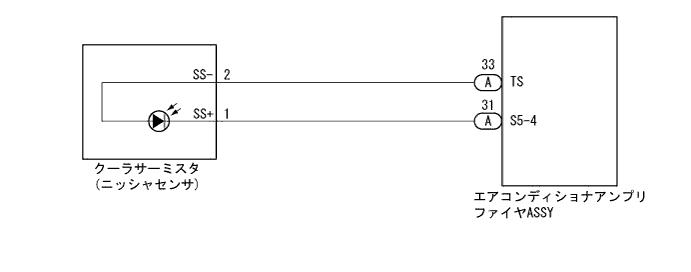
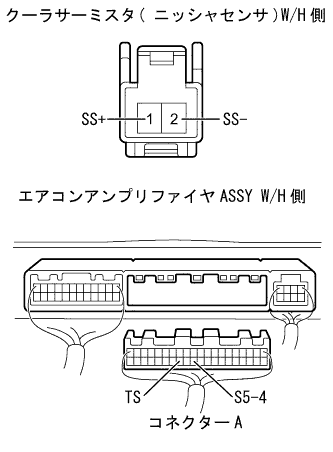
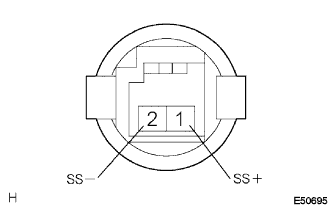

DTC B1421/21 (P Seat) Solar Sensor Circuit Malfunction (Indoor Output Normal) |
| DTC No. SAE/TCCS | DTC Detection Condition
| Inspection Area |
|---|---|---|
| B1421/21 |
|
|

| Step 1 | Read TaSCAN Data (Solar Sensor) |
Using SST (TaSCAN), inspect the ECU Data Monitor by following the screen instructions.
| Item Name [Item Symbol] | Condition | Reference Value |
|---|---|---|
| Solar Sensor P-Seat [SUP] | Sunlight present |
|
| Result | Proceed to |
|---|---|
| ECU Data Monitor reference values are abnormal | A |
| ECU Data Monitor reference values are normal (when inspecting according to Diagnostic Trouble Code Chart) | B |
| ECU Data Monitor reference values are normal (when inspecting according to List by Symptom) | C |
|
| ||||
|
| ||||
| A | |
| Step 2 | Inspect Wire Harness and Connector (Cooler Thermistor (Solar Sensor) - Air Conditioner Amplifier Assembly) |
for reference.Disconnect the cooler thermistor (solar sensor) connector.
Disconnect connector A of the air conditioner amplifier assembly.
 |
Using SST (Toyota electrical tester), measure the resistance between the connector terminals of the vehicle wire harness and between the terminals and body ground. (For Terminals of ECU, see)
| Tester Connection (Terminal Symbol) | Condition | Standard |
|---|---|---|
| 2 (SS-) - Body ground | Always | 10 kΩ or higher |
| 1 (SS+) - Body ground | Always | 10 kΩ or higher |
| 2(SS-) - A33(TS) | Always | Below 1 Ω |
| 1(SS+) - A31(S5-4) | Always | Below 1 Ω |
|
| ||||
| OK | |
| Step 3 | Inspect Cooler Thermistor (Solar Sensor) |
Connect the cooler thermistor (solar sensor) connector.
Connect connector A of the air conditioner amplifier assembly.
Turn IG ON.
 |
Using SST (Toyota electrical tester), measure the voltage between the terminals of the cooler thermistor (solar sensor) connector.
| Tester Connection (Terminal Symbol) | Condition | Standard |
|---|---|---|
| 1(SS+) - 2(SS-) | Not exposed to direct sunlight (sensor covered with cloth) | Below 0.8V |
| 1(SS+) - 2(SS-) | When inspection light is brought close | 0.8 to 4.3V (changes according to light intensity) |
|
| ||||
| OK | ||
| ||